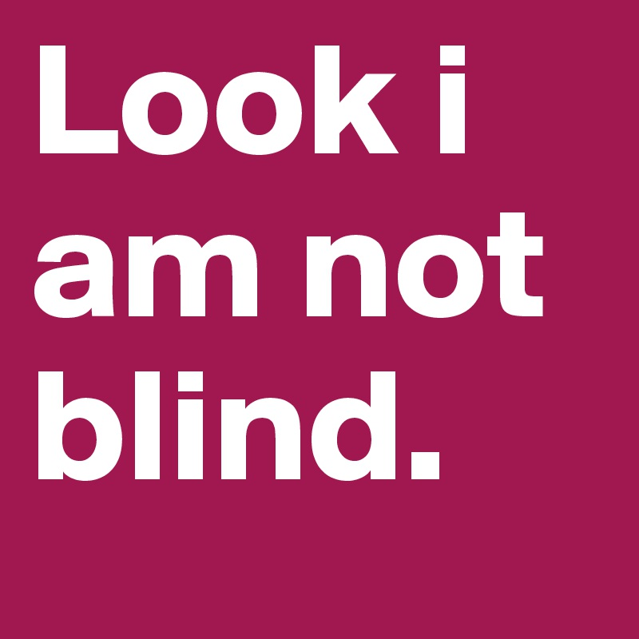

I Am Not Blind
You beg to Differ? Should We Explore This?
You're sitting too close to thee tv. You need to eat that palm oil. Can you chew this carrot and all this garlic for me?

"Is there medicine in your glasses?" "Ei! So can you see?" "Herh you're blind oh?" "So do you sleep with your glasses?" "So if you remove your glasses can you see?"
People, societies and culture are different today from what they used to be a couple of years ago but somehow, Ghanaians have managed to stay the same to some extent. Cheers to that!
Dont Deny It! You've probably heard one, some or all of these at some point. You, looking sheepish. I'm sure you've asked them too.

These are a few of the myriad of questions the average glasses wearer ha probably answered. The worst of them is when they force you to take your glasses off and hold fingers up asking, "What number is this?"
Wearing glasses is a bit like being part of a secret community, and members of this community are the only ones who understand our struggles. Which is why these random suggestion annoy us sometimes.
- Massage your eyeballs ant-clockwise for 7 minutes everyday
- Eat 3 eggs every morning
- Open your eyes into a cup of green tea
Your levels of concern are heartwarming. Bless your hearts.

Now lets bust a few myths aroucnd wearing glasses.
Click here to read about eye defects
The End